In Chapter 3 "Atoms, Molecules, and Ions", we introduced the periodic table as a tool for organizing the known chemical elements. A periodic table is shown in Figure 8.8 "The Periodic Table". The elements are listed by atomic number (the number of protons in the nucleus), and elements with similar chemical properties are grouped together in columns.
Figure 8.8 The Periodic Table
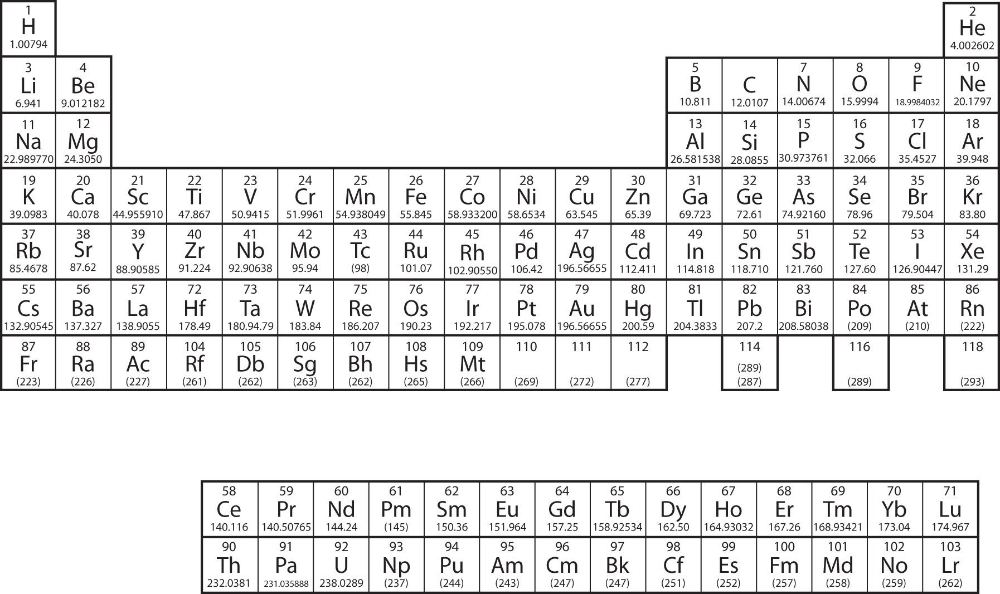Why does the periodic table have the structure it does? The answer is rather simple, if you understand electron configurations: the shape of the periodic table mimics the filling of the subshells with electrons.
Let us start with H and He. Their electron configurations are 1s1 and 1s2, respectively; with He, the n = 1 shell is filled. These two elements make up the first row of the periodic table (see Figure 8.9 "The 1").
Figure 8.9 The 1s Subshell
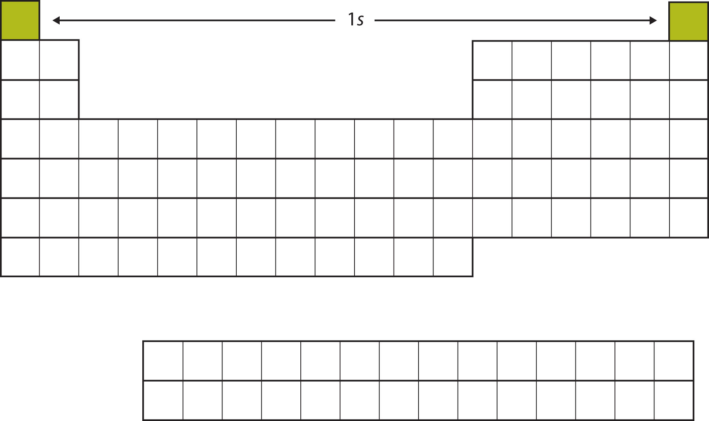H and He represent the filling of the 1s subshell.
The next two electrons, for Li and Be, would go into the 2s subshell. Figure 8.10 "The 2" shows that these two elements are adjacent on the periodic table.
Figure 8.10 The 2s Subshell
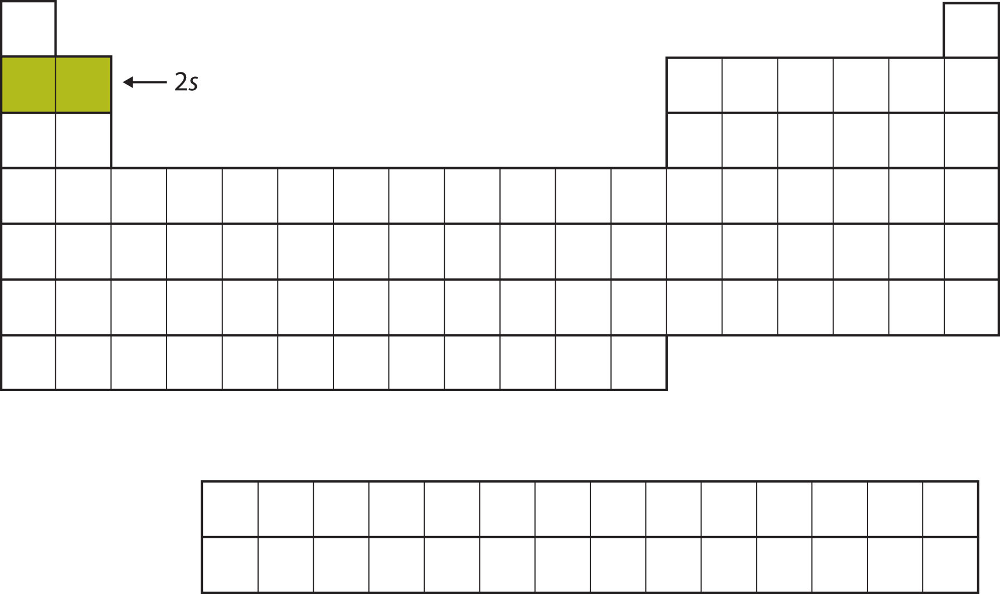In Li and Be, the 2s subshell is being filled.
For the next six elements, the 2p subshell is being occupied with electrons. On the right side of the periodic table, these six elements (B through Ne) are grouped together (Figure 8.11 "The 2").
Figure 8.11 The 2p Subshell
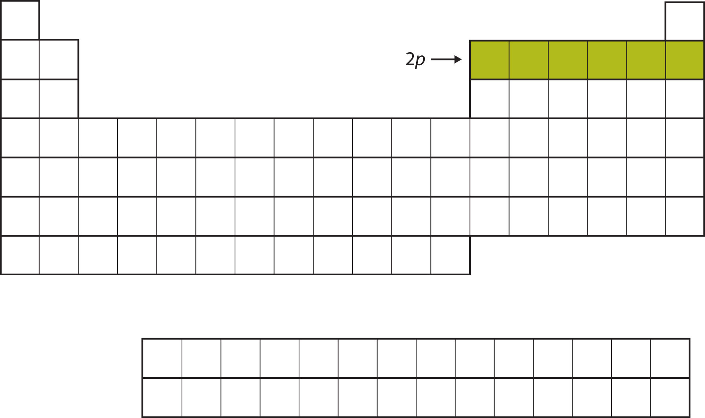For B through Ne, the 2p subshell is being occupied.
The next subshell to be filled is the 3s subshell. The elements when this subshell is being filled, Na and Mg, are back on the left side of the periodic table (Figure 8.12 "The 3").
Figure 8.12 The 3s Subshell
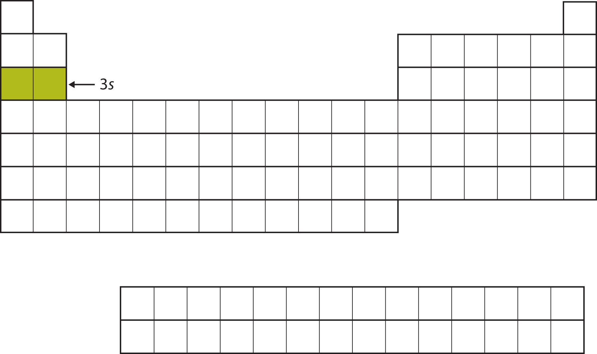Now the 3s subshell is being occupied.
Next, the 3p subshell is filled with the next six elements (Figure 8.13 "The 3").
Figure 8.13 The 3p Subshell
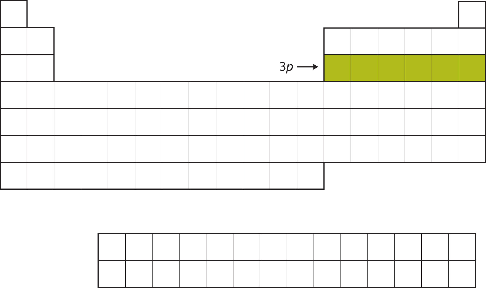Next, the 3p subshell is filled with electrons.
Instead of filling the 3d subshell next, electrons go into the 4s subshell (Figure 8.14 "The 4").
Figure 8.14 The 4s Subshell
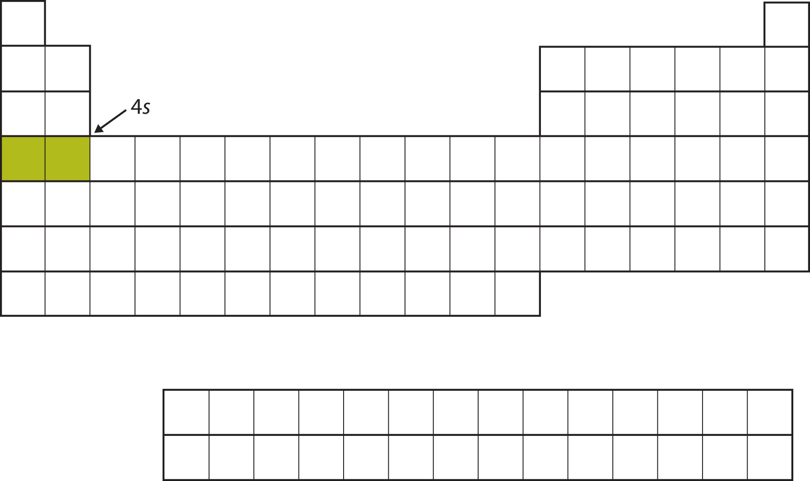The 4s subshell is filled before the 3d subshell. This is reflected in the structure of the periodic table.
After the 4s subshell is filled, the 3d subshell is filled with up to 10 electrons. This explains the section of 10 elements in the middle of the periodic table (Figure 8.15 "The 3").
Figure 8.15 The 3d Subshell
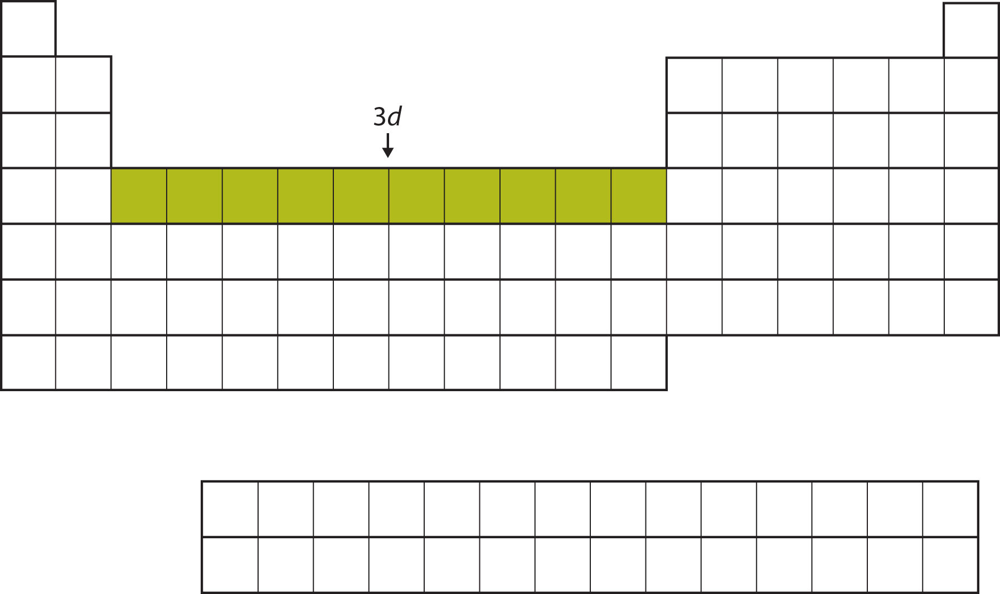The 3d subshell is filled in the middle section of the periodic table.
And so forth. As we go across the rows of the periodic table, the overall shape of the table outlines how the electrons are occupying the shells and subshells.
The first two columns on the left side of the periodic table are where the s subshells are being occupied. Because of this, the first two rows of the periodic table are labeled the s blockThe columns of the periodic table in which subshells are being occupied.. Similarly, the p blockThe columns of the periodic table in which subshells are being occupied. are the right-most six columns of the periodic table, the d blockThe columns of the periodic table in which subshells are being occupied. is the middle 10 columns of the periodic table, while the f blockThe columns of the periodic table in which subshells are being occupied. is the 14-column section that is normally depicted as detached from the main body of the periodic table. It could be part of the main body, but then the periodic table would be rather long and cumbersome. Figure 8.16 "Blocks on the Periodic Table" shows the blocks of the periodic table.
Figure 8.16 Blocks on the Periodic Table
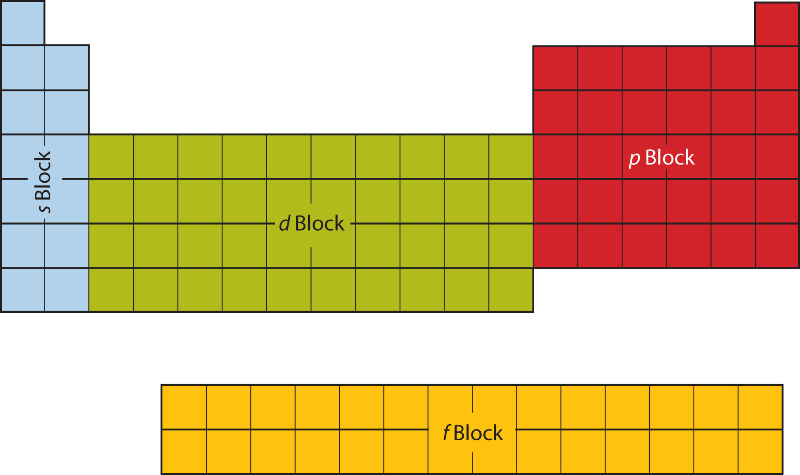The periodic table is separated into blocks depending on which subshell is being filled for the atoms that belong in that section.
The electrons in the highest-numbered shell, plus any electrons in the last unfilled subshell, are called valence electronsThe electrons in the highest-numbered shell, plus any electrons in the last unfilled subshell.; the highest-numbered shell is called the valence shellThe highest-numbered shell in an atom that contains electrons.. (The inner electrons are called core electrons.) The valence electrons largely control the chemistry of an atom. If we look at just the valence shell’s electron configuration, we find that in each column, the valence shell’s electron configuration is the same. For example, take the elements in the first column of the periodic table: H, Li, Na, K, Rb, and Cs. Their electron configurations (abbreviated for the larger atoms) are as follows, with the valence shell electron configuration highlighted:
| H: | 1s1 |
| Li: | 1s22s1 |
| Na: | [Ne]3s1 |
| K: | [Ar]4s1 |
| Rb: | [Kr]5s1 |
| Cs: | [Xe]6s1 |
They all have a similar electron configuration in their valence shells: a single s electron. Because much of the chemistry of an element is influenced by valence electrons, we would expect that these elements would have similar chemistry—and they do. The organization of electrons in atoms explains not only the shape of the periodic table but also the fact that elements in the same column of the periodic table have similar chemistry.
The same concept applies to the other columns of the periodic table. Elements in each column have the same valence shell electron configurations, and the elements have some similar chemical properties. This is strictly true for all elements in the s and p blocks. In the d and f blocks, because there are exceptions to the order of filling of subshells with electrons, similar valence shells are not absolute in these blocks. However, many similarities do exist in these blocks, so a similarity in chemical properties is expected.
Similarity of valence shell electron configuration implies that we can determine the electron configuration of an atom solely by its position on the periodic table. Consider Se, as shown in Figure 8.17 "Selenium on the Periodic Table". It is in the fourth column of the p block. This means that its electron configuration should end in a p4 electron configuration. Indeed, the electron configuration of Se is [Ar]4s23d104p4, as expected.
Figure 8.17 Selenium on the Periodic Table
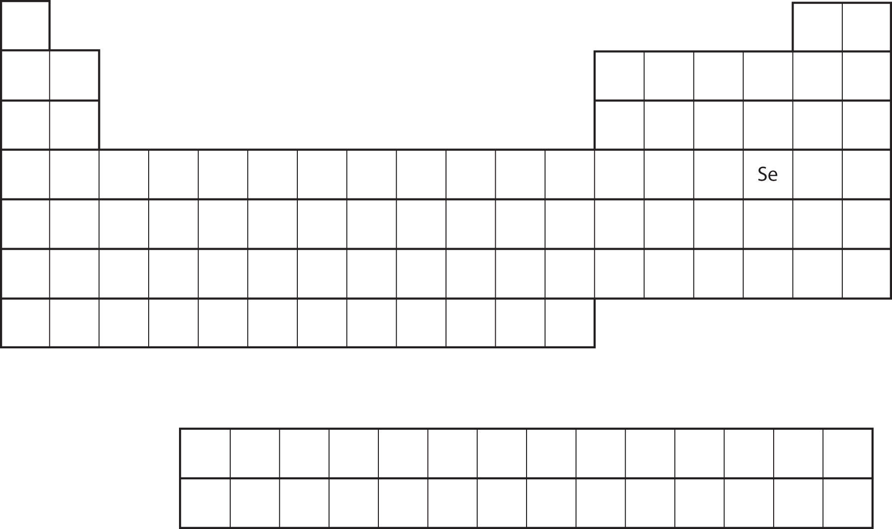From the element’s position on the periodic table, predict the valence shell electron configuration for each atom. See Figure 8.18 "Various Elements on the Periodic Table".
Solution
Test Yourself
From the element’s position on the periodic table, predict the valence shell electron configuration for each atom. See Figure 8.18 "Various Elements on the Periodic Table".
Answer
Figure 8.18 Various Elements on the Periodic Table
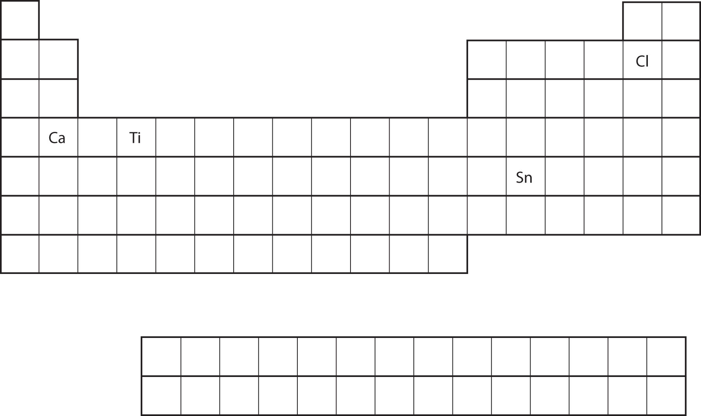The color of objects comes from a different mechanism than the colors of neon and other discharge lights. Although colored lights produce their colors, objects are colored because they preferentially reflect a certain color from the white light that shines on them. A red tomato, for example, is bright red because it reflects red light while absorbing all the other colors of the rainbow.
Many foods, such as tomatoes, are highly colored; in fact, the common statement “you eat with your eyes first” is an implicit recognition that the visual appeal of food is just as important as its taste. But what about processed foods?
Many processed foods have food colorings added to them. There are two types of food colorings: natural and artificial. Natural food colorings include caramelized sugar for brown; annatto, turmeric, and saffron for various shades of orange or yellow; betanin from beets for purple; and even carmine, a deep red dye that is extracted from the cochineal, a small insect that is a parasite on cacti in Central and South America. (That’s right: you may be eating bug juice!)
Some colorings are artificial. In the United States, the Food and Drug Administration currently approves only seven compounds as artificial colorings in food, beverages, and cosmetics:
Lower-numbered colors are no longer on the market or have been removed for various reasons. Typically, these artificial colorings are large molecules that absorb certain colors of light very strongly, making them useful even at very low concentrations in foods and cosmetics. Even at such low amounts, some critics claim that a small portion of the population (especially children) is sensitive to artificial colorings and urge that their use be curtailed or halted. However, formal studies of artificial colorings and their effects on behavior have been inconclusive or contradictory. Despite this, most people continue to enjoy processed foods with artificial coloring (like those shown in the accompanying figure).
Artificial food colorings are found in a variety of food products, such as processed foods, candies, and egg dyes. Even pet foods have artificial food coloring in them, although it’s likely that the animal doesn’t care!
Source: Photo courtesy of Matthew Bland, http://www.flickr.com/photos/matthewbland/3111904731.
Where on the periodic table are s subshells being occupied by electrons?
Where on the periodic table are d subshells being occupied by electrons?
In what block is Ra found?
In what block is Br found?
What are the valence shell electron configurations of the elements in the second column of the periodic table?
What are the valence shell electron configurations of the elements in the next-to-last column of the periodic table?
What are the valence shell electron configurations of the elements in the first column of the p block?
What are the valence shell electron configurations of the elements in the last column of the p block?
From the element’s position on the periodic table, predict the electron configuration of each atom.
From the element’s position on the periodic table, predict the electron configuration of each atom.
From the element’s position on the periodic table, predict the electron configuration of each atom.
From the element’s position on the periodic table, predict the electron configuration of each atom.
From the element’s position on the periodic table, predict the electron configuration of each atom.
From the element’s position on the periodic table, predict the electron configuration of each atom.
the first two columns
the s block
ns2
ns2np1